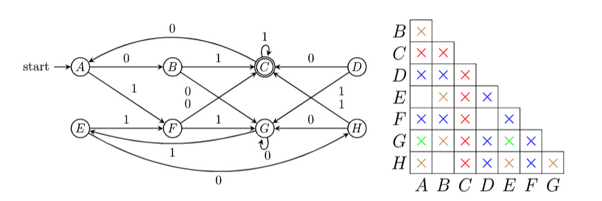
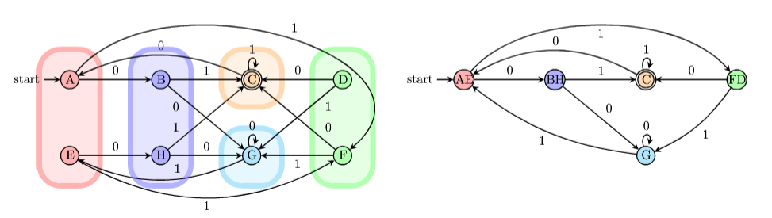

2. DFA
1. DFA
(1). 定义
确定的有穷自动机 (Deterministic Finite Automaton) $A$ 为五元组 $A=( Q,\ \Sigma,\ \delta,\ q_0,\ F)$，其中
① $Q$ : a finite set of states；
② $\Sigma$ : a finite set of input symbols；
③ $\delta$ : $Q\times \Sigma\to\Sigma$，transition function；
④ $q_0\in Q$ : a start state
⑤ $F\subseteq Q$ : a set of final or accepting states。
e.g.1 设计 DFA: 任何由 0 和 1 构成的串中，接受含有 01 子串的全部串
$A=(\lbrace q_1,q_2,q_3\rbrace ,\lbrace 0, 1\rbrace ,\delta,q_1,\lbrace q_3\rbrace )$，其中 $\delta(q_1,1)=q_1,\ \delta(q_2,1)=...$
(2). DFA 的简化表示
transition diagram
transition table
| $0$ | $1$ | |
| $\to q_1$ | $q_2$ | $q_1$ |
| $q_2$ | $q_2$ | $q_3$ |
| $*q_3$ | $q_3$ | $q_3$ |
(3). 扩展转移函数
extending the transiton function: $\hat{\delta}:Q\times \Sigma^*\to Q$
$
\hat\delta(q,w)=
\begin{cases}
q& w=\varepsilon\\
\delta(\hat{\delta}(q,x),a)& w=xa
\end{cases}
$
即形式化表示 DFA 识别串的过程。
(4). DFA 的语言
若 $D=\{Q,\Sigma,\delta,q_0,F\}$，则 DFA $D$ 接收的语言为 $\mathbf{L}(D)=\{w\in \Sigma^*\ |\ \hat{\delta}(q_0,w)\in F\}$
如果 $L$ 是某个 DFA $D$ 的语言，即 $L=\mathbf{L}(D)$，则称 $L$ 是正则语言。
More Examples
(1). 若 $\Sigma\{0,1\}$，求接受 ① $\emptyset$; ② $\Sigma^*$; ③ $\lbrace \varepsilon\rbrace$ 的 DFA；
(2). $\Sigma=\{0,1\}$，DFA 接收 $w$，$w$ 是 $3$ 的倍数的二进制表示。
2. DFA 的最小化
(1). 状态的等价性
对 $\small\mathrm{DFA}$ $A=(Q,\Sigma,\delta,q_0,F)$ 的两个状态 $p$ 和 $q$ 和 $\forall w\in\Sigma^*$, 若有
$\hat{\delta}(p,w)\in F\Leftrightarrow \hat{\delta}(q,w)\in F$
则称 $p$ 和 $q$ 是等价的，否则是可区分的 (distinguishable)。
(2). table-filling algorithm
递归寻找 $\small\mathrm{DFA}$ 中全部的可区分状态对：
① 若 $p\in F$ 且 $q\notin F$，则 $[p,q]$ 是可区分的；
② $\exists a\in\Sigma$，若 $[r=\delta(p,a),s=\delta(q,a)]$ 是可区分的，则 $[p,q]$ 是可区分的。
e.g.

